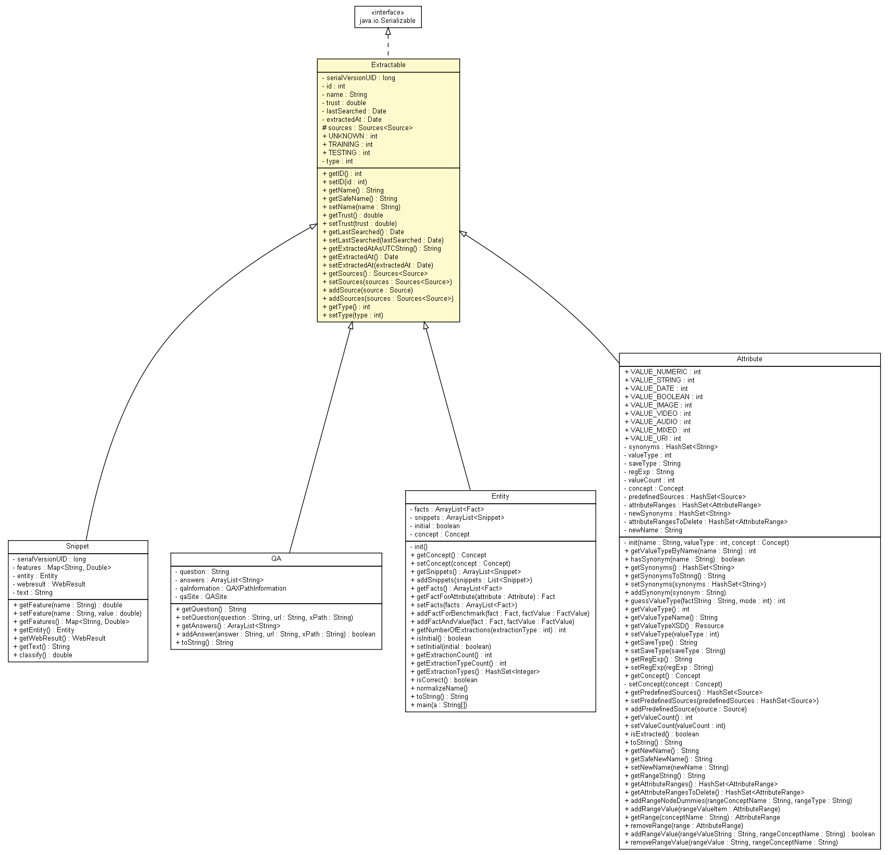

tud.iir.knowledge
Class Extractable

java.lang.Object
 tud.iir.knowledge.Extractable
tud.iir.knowledge.Extractable
- All Implemented Interfaces:
- java.io.Serializable
- Direct Known Subclasses:
- Attribute, Entity, QA, Snippet
public abstract class Extractable
- extends java.lang.Object
- implements java.io.Serializable
The abstract class of what can be extracted.
- See Also:
- Serialized Form
| Methods inherited from class java.lang.Object |
clone, equals, finalize, getClass, hashCode, notify, notifyAll, toString, wait, wait, wait |
serialVersionUID
private static final long serialVersionUID
- See Also:
- Constant Field Values
id
private int id
name
private java.lang.String name
trust
private double trust
lastSearched
private java.util.Date lastSearched
extractedAt
private java.util.Date extractedAt
sources
protected Sources<Source> sources
UNKNOWN
public static int UNKNOWN
TRAINING
public static int TRAINING
TESTING
public static int TESTING
type
private int type
Extractable
public Extractable()
getID
public int getID()
setID
public void setID(int id)
getName
public java.lang.String getName()
getSafeName
public java.lang.String getSafeName()
setName
public void setName(java.lang.String name)
getTrust
public double getTrust()
setTrust
public void setTrust(double trust)
getLastSearched
public java.util.Date getLastSearched()
setLastSearched
public void setLastSearched(java.util.Date lastSearched)
getExtractedAtAsUTCString
public java.lang.String getExtractedAtAsUTCString()
getExtractedAt
public java.util.Date getExtractedAt()
setExtractedAt
public void setExtractedAt(java.util.Date extractedAt)
getSources
public Sources<Source> getSources()
setSources
public void setSources(Sources<Source> sources)
addSource
public void addSource(Source source)
addSources
public void addSources(Sources<Source> sources)
getType
public int getType()
setType
public void setType(int type)